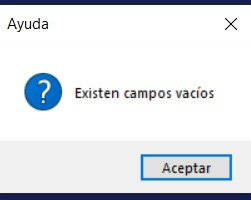

I. Botones Generales usados por el Sistema:
i. Boton Agregar Detalle: Sirve para habilitar la parte del detalle de movimiento,
ii. Boton Registrar: Se debe utilizar cuando se quiera registrar el movimiento, se debe presionar 2 veces, uno para visualizar el movimiento y otro para guardar en la base de datos.
iii. Boton Cancelar: En caso de que no se desee registrar, presione boton cancelar para reiniciar los valores.
II. Posibles errores:
i. Campos vacíos: No debe dejar campos vacíos, ya que el sistema no lo dejará avanzar
